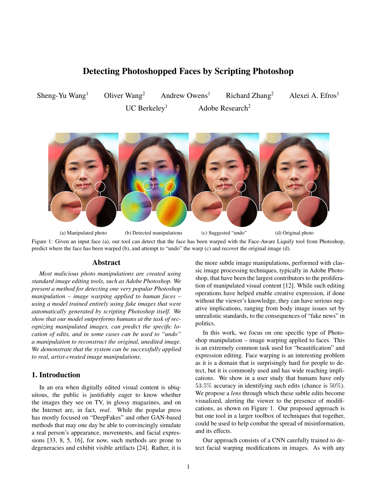

|  |
S.-Y. Wang, O. Wang, A. Owens, R. Zhang, A. A. Efros,
Detecting Photoshopped Faces by Scripting Photoshop
In Arxiv, 2019. (Paper).
|
Acknowledgements
We thank Daichi Ito and Adam Pintek for contributing to our artist testset, and
Jacob Huh for the helpful discussions. This work was supported, in part, by DARPA MediFor
and UC Berkeley Center for Long-Term Cybersecurity. The views, opinions and/or findings expressed are those of the authors and should not be interpreted as representing the official views or policies of the Department of Defense or the U.S. Government.
This website template is borrowed from our dear forensics fellow.
|